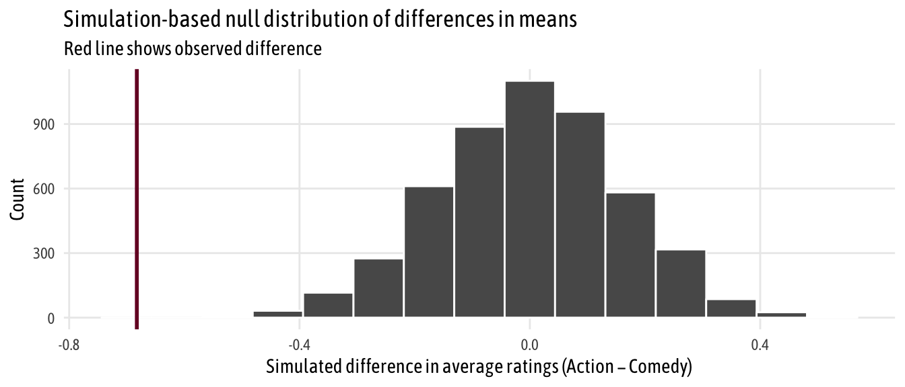
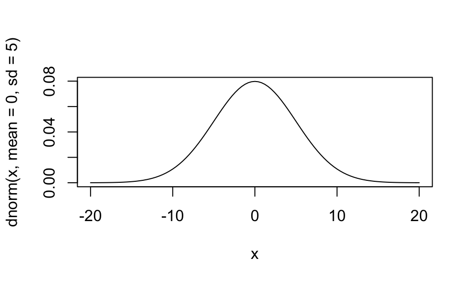
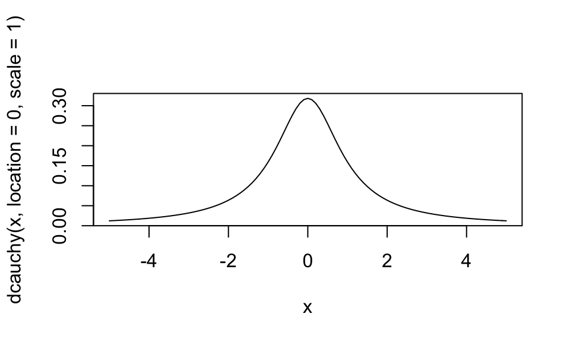
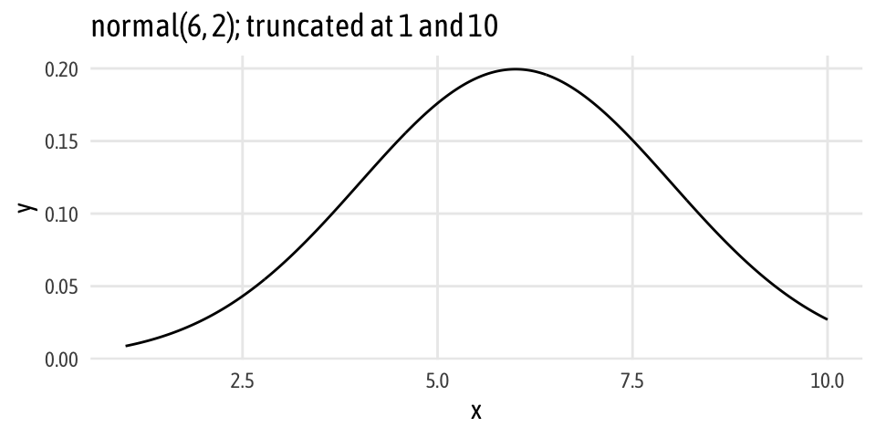
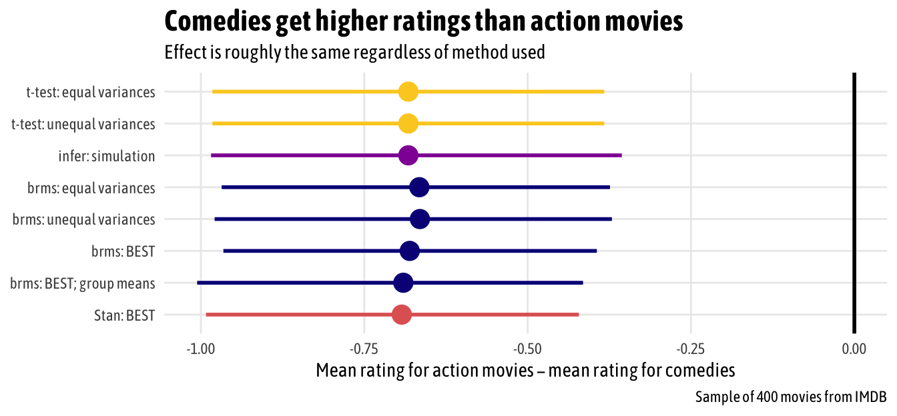

![]()
Taking a sample from two groups from a population and seeing if there’s a significant or substantial difference between them is a standard task in statistics. Measuring performance on a test before and after some sort of intervention, measuring average GDP in two different continents, measuring average height in two groups of flowers, etc.—we like to know if any group differences we see are attributable to chance / measurement error, or if they’re real.
Classical frequentist statistics typically measures the difference between groups with a t-test, but t-tests are 100+ years old and statistical methods have advanced a lot since 1908. Nowadays, we can use simulation and/or Bayesian methods to get richer information about the differences between two groups without worrying so much about the assumptions and preconditions for classical t-tests.
Mostly as a resource to future me, here are a bunch of different ways to measure the difference in means in two groups. I’ve done them all in real life projects, but I’m tired of constantly searching my computer for the code to do them:)
These ways can all be adapted to different situations (i.e. difference in proportions, one-sample difference in means, etc.). The process for simulation and Bayesian approaches will be roughly the same, while for frequentist approaches, you’ll need to walk through a statistical test workflow to find the appropriate test.
Also, this is long and really kind of meant as a general reference. Here’s a tl;dr table of contents:
- Data
- Classical frequentist t-tests
- Simulation-based tests
- Bayesian regression
- Bayesian analysis, directly with Stan
- Regression, BEST, with priors on variables instead of difference
- Comparing all methods
Data
First we need some data to play with. We’ll use the ggplot2movies package, which contains information about almost 60,000 movies from IMDB from 1893 to 2005. For this example, we want to see if there is a significant/substantial/real difference in the average IMDB rating for action movies and comedies. Are people more likely to rate comedies higher than action movies?
Instead of working with all 20,407 action movies and comedies, we take a random sample of 200 each. (This is just so we can have some variation in the group averages—if we work with all 20,000, the confidence intervals for each group average basically disappear since there are so many observations.)
# Load libraries
library(tidyverse) # ggplot, dplyr, and friends
library(ggridges) # Ridge plots
library(ggstance) # Horizontal pointranges and bars
library(patchwork) # Lay out multiple ggplot plots; install from https://github.com/thomasp85/patchwork
library(scales) # Nicer formatting for numbers
library(broom) # Convert model results to tidy data frames
library(infer) # Statistical inference with simulation
library(rstan) # R interface to Stan
library(brms) # Run Stan-based models with standard R syntax
library(ggplot2movies) # Lots of movies from IMDB
# Clean up data
set.seed(1234) # Set seed so we get the same sampled rows every time
movies_clean <- movies %>%
# Make a binary column for genre
select(title, year, rating, Action, Comedy) %>%
filter(!(Action == 1 & Comedy == 1)) %>%
mutate(genre = case_when(Action == 1 ~ "Action",
Comedy == 1 ~ "Comedy",
TRUE ~ "Neither")) %>%
filter(genre != "Neither") %>%
# Make a numeric version of genre, where action = 1, comedy = 2
mutate(genre_numeric = as.numeric(factor(genre))) %>%
# Make genre a factor
mutate(genre = factor(genre)) %>%
select(-Action, -Comedy) %>%
# Randomly select 200 movies in each genre
group_by(genre) %>%
sample_n(200) %>%
ungroup()To get a sense of the data, we’ll do some quick exploratory data analysis with a bunch of different graph types.
# Make a custom theme
# I'm using Asap Condensed; download from
# https://fonts.google.com/specimen/Asap+Condensed
theme_fancy <- function() {
theme_minimal(base_family = "Asap Condensed") +
theme(panel.grid.minor = element_blank())
}
eda_boxplot <- ggplot(movies_clean, aes(x = genre, y = rating, fill = genre)) +
geom_boxplot() +
scale_fill_manual(values = c("#0288b7", "#a90010"), guide = FALSE) +
scale_y_continuous(breaks = seq(1, 10, 1)) +
labs(x = NULL, y = "Rating") +
theme_fancy()
eda_histogram <- ggplot(movies_clean, aes(x = rating, fill = genre)) +
geom_histogram(binwidth = 1, color = "white") +
scale_fill_manual(values = c("#0288b7", "#a90010"), guide = FALSE) +
scale_x_continuous(breaks = seq(1, 10, 1)) +
labs(y = "Count", x = "Rating") +
facet_wrap(~ genre, nrow = 2) +
theme_fancy() +
theme(panel.grid.major.x = element_blank())
eda_ridges <- ggplot(movies_clean, aes(x = rating, y = fct_rev(genre), fill = genre)) +
stat_density_ridges(quantile_lines = TRUE, quantiles = 2, scale = 3, color = "white") +
scale_fill_manual(values = c("#0288b7", "#a90010"), guide = FALSE) +
scale_x_continuous(breaks = seq(0, 10, 2)) +
labs(x = "Rating", y = NULL,
subtitle = "White line shows median rating") +
theme_fancy()
(eda_boxplot | eda_histogram) /
eda_ridges +
plot_annotation(title = "Do comedies get higher ratings than action movies?",
subtitle = "Sample of 400 movies from IMDB",
theme = theme(text = element_text(family = "Asap Condensed"),
plot.title = element_text(face = "bold",
size = rel(1.5))))
Initially, it looks like there might be a difference in average rating. Comedies tend to have higher ratings. We can calculate the difference with some dplyr group_by() %>% summarize():
group_diffs <- movies_clean %>%
group_by(genre) %>%
summarize(avg_rating = mean(rating, na.rm = TRUE)) %>%
mutate(diff_means = avg_rating - lead(avg_rating))
group_diffs
## # A tibble: 2 x 3
## genre avg_rating diff_means
## <fct> <dbl> <dbl>
## 1 Action 5.28 -0.682
## 2 Comedy 5.97 NAYep. There’s a -0.6825 point difference in ratings. Action movies score 0.7 points lower than comedies, on average.
But how certain are we that that difference is real and not just due to sampling error? It’s time for inference!
Classical frequentist t-tests
t-test, assuming equal variances
We can use a standard frequentist t-test to check if the group means are different. We can assume that the variances in the two groups are the same and run t.test():
# Assume equal variances
t_test_eq <- t.test(rating ~ genre, data = movies_clean, var.equal = TRUE)
t_test_eq
##
## Two Sample t-test
##
## data: rating by genre
## t = -4.4753, df = 398, p-value = 0.000009977
## alternative hypothesis: true difference in means is not equal to 0
## 95 percent confidence interval:
## -0.9823168 -0.3826832
## sample estimates:
## mean in group Action mean in group Comedy
## 5.2845 5.9670The default output is helpful—the p-value is really tiny, which means there’s a tiny chance that we’d see a difference that big in group means in a world where there’s no difference. However, in this format, it’s hard to extract any of these values for later use, like in plotting. We can use the tidy() function from the broom library to convert these t-test results to a nice data frame.
t_test_eq_tidy <- tidy(t_test_eq) %>%
# Calculate difference in means, since t.test() doesn't actually do that
mutate(estimate = estimate1 - estimate2) %>%
# Rearrange columns
select(starts_with("estimate"), everything())
t_test_eq_tidy
## # A tibble: 1 x 10
## estimate1 estimate2 estimate statistic p.value parameter conf.low
## <dbl> <dbl> <dbl> <dbl> <dbl> <dbl> <dbl>
## 1 5.28 5.97 -0.682 -4.48 9.98e-6 398 -0.982
## # … with 3 more variables: conf.high <dbl>, method <chr>,
## # alternative <chr>By default, though, R does not assume that the variance in the two groups’ populations is equal, which is probably a reasonable thing to do. There may be structural differences in how comedies and action movies are produced, which in turn leads to structural differences in how they’re rated.
There are several systematic ways to check if the two groups have equal variance. For all these tests, the null hypothesis is that the two groups have similar (homogeneous) variances. If the p-value is less than 0.05, we can assume that they have unequal or heterogeneous variances. (Here’s a helpful overview of this process.)
-
Bartlett test: Check homogeneity of variances based on the mean
bartlett.test(rating ~ genre, data = movies_clean) ## ## Bartlett test of homogeneity of variances ## ## data: rating by genre ## Bartlett's K-squared = 0.10006, df = 1, p-value = 0.7518 -
Levene test: Check homogeneity of variances based on the median, so it’s more robust to outliers
# Install the car package first car::leveneTest(rating ~ genre, data = movies_clean) ## Levene's Test for Homogeneity of Variance (center = median) ## Df F value Pr(>F) ## group 1 0.4917 0.4836 ## 398 -
Fligner-Killeen test: Check homogeneity of variances based on the median, so it’s more robust to outliers
fligner.test(rating ~ genre, data = movies_clean) ## ## Fligner-Killeen test of homogeneity of variances ## ## data: rating by genre ## Fligner-Killeen:med chi-squared = 0.78337, df = 1, p-value = 0.3761 -
Kruskal-Wallis test: Check homogeneity of distributions nonparametrically
kruskal.test(rating ~ genre, data = movies_clean) ## ## Kruskal-Wallis rank sum test ## ## data: rating by genre ## Kruskal-Wallis chi-squared = 19.787, df = 1, p-value = 0.000008655
Phew. In all these tests except the Kruskall-Wallis test, we don’t have enough evidence to conclude that the variances are different, so we’re probably safe leaving var.equal = TRUE on.
t-test, assuming unequal variance
We can run a t-test assuming that the two groups have unequal variances by setting var.equal = FALSE, or just leaving it off. I generally just do this instead of going through all the tests for equal variance.
# Assume unequal variances
t_test_uneq <- t.test(rating ~ genre, data = movies_clean)
t_test_uneq_tidy <- tidy(t_test_uneq) %>%
mutate(estimate = estimate1 - estimate2) %>%
select(starts_with("estimate"), everything())
t_test_uneq_tidy
## # A tibble: 1 x 10
## estimate estimate1 estimate2 statistic p.value parameter conf.low
## <dbl> <dbl> <dbl> <dbl> <dbl> <dbl> <dbl>
## 1 -0.682 5.28 5.97 -4.48 9.98e-6 398. -0.982
## # … with 3 more variables: conf.high <dbl>, method <chr>,
## # alternative <chr>Simulation-based tests
Instead of dealing with all the assumptions of the data and finding the exact statistical test written by some dude in the 1940s, we can use the power of bootstrapping, permutation, and simulation to construct a null distribution and calculate confidence intervals. According to Allen Downey, there is actually only one statistical test and that at their core, all statistical tests follow the same universal pattern:
- Step 1: Calculate a sample statistic, or \(\delta\). This is the main measure you care about: the difference in means, the average, the median, the proportion, the difference in proportions, the chi-squared value, etc.
- Step 2: Use simulation to invent a world where \(\delta\) is null. Simulate what the world would look like if there was no difference between two groups, or if there was no difference in proportions, or where the average value is a specific number.
- Step 3: Look at \(\delta\) in the null world. Put the sample statistic in the null world and see if it fits well.
- Step 4: Calculate the probability that \(\delta\) could exist in null world. This is the p-value, or the probability that you’d see a \(\delta\) at least that high in a world where there’s no difference.
- Step 5: Decide if \(\delta\) is statistically significant. Choose some evidentiary standard or threshold (like 0.05) for deciding if there’s sufficient proof for rejecting the null world.
I have a fully commented example of how to do this with the infer package here. Once you get the hang of it, the infer workflow is fairly intuitive and flexible and far more delightful than worrying about classical tests.
First we calculate the difference in means in the actual data:
# Calculate the difference in means
diff_means <- movies_clean %>%
specify(rating ~ genre) %>%
# Order here means we subtract comedy from action (Action - Comedy)
calculate("diff in means", order = c("Action", "Comedy"))
diff_means
## # A tibble: 1 x 1
## stat
## <dbl>
## 1 -0.682Then we can generate a bootstrapped distribution of the difference in means based on our sample and calculate the confidence interval:
boot_means <- movies_clean %>%
specify(rating ~ genre) %>%
generate(reps = 1000, type = "bootstrap") %>%
calculate("diff in means", order = c("Action", "Comedy"))
boostrapped_confint <- boot_means %>% get_confidence_interval()
boot_means %>%
visualize() +
shade_confidence_interval(boostrapped_confint,
color = "#8bc5ed", fill = "#85d9d2") +
geom_vline(xintercept = diff_means$stat, size = 1, color = "#77002c") +
labs(title = "Bootstrapped distribution of differences in means",
x = "Action − Comedy", y = "Count",
subtitle = "Red line shows observed difference; shaded area shows 95% confidence interval") +
theme_fancy()
Neat. We have a simulation-based confidence interval, and it doesn’t contain zero, so we can have some confidence that there’s a real difference between the two groups.
We can go through the testing process more thoroughly by following Downey’s process. We’ve already done step one (calculate \(\delta\)); next we generate a world where there’s no difference by shuffling all the action/comedy labels through permutation
# Step 2: Invent a world where δ is null
genre_diffs_null <- movies_clean %>%
specify(rating ~ genre) %>%
hypothesize(null = "independence") %>%
generate(reps = 5000, type = "permute") %>%
calculate("diff in means", order = c("Action", "Comedy"))
# Step 3: Put actual observed δ in the null world and see if it fits
genre_diffs_null %>%
visualize() +
geom_vline(xintercept = diff_means$stat, size = 1, color = "#77002c") +
scale_y_continuous(labels = comma) +
labs(x = "Simulated difference in average ratings (Action − Comedy)", y = "Count",
title = "Simulation-based null distribution of differences in means",
subtitle = "Red line shows observed difference") +
theme_fancy()
That red line is pretty far to the left and seems like it wouldn’t fit very well in a world where there’s no actual difference between the groups. We can calculate the probability of seeing that red line in a null world (step 4) with get_p_value() (and we can use the cool new pvalue() function in the scales library to format it as < 0.001):
# Step 4: Calculate probability that observed δ could exist in null world
genre_diffs_null %>%
get_p_value(obs_stat = diff_means, direction = "both") %>%
mutate(p_value_clean = pvalue(p_value))
## # A tibble: 1 x 2
## p_value p_value_clean
## <dbl> <chr>
## 1 0 <0.001Because the p-value is so small, it passes pretty much all evidentiary thresholds (p < 0.05, p < 0.01, etc), so we can safely say that there’s a difference between the two groups. Action movies are rated lower, on average, than comedies.
Bayesian regression
Next we can leave the world of frequentist statistics and null hypothesis testing and do some Bayesian analysis. Frequentist null hypothesis significance testing (NHST) determines the probability of the data given a null hypothesis (i.e. \(P(\text{data} | H)\), yielding results that are often unwieldy, phrased as the probability of rejecting the null if it is true (hence all that talk of “null worlds” earlier). In contrast, Bayesian analysis determines the probability of a hypothesis given the data (i.e.\(P(H | \text{data})\)), resulting in probabilities that are directly interpretable.
Bayesian analysis is way more computationally intensive and requires more upfront work (e.g prior specification). Because of this, R itself doesn’t have robust support for the actual Monte Carlo sampling and other computational heavy lifting involved in Bayesian stuff. Instead, it can connect to external sampling programs that are optimized for this kind of repetitive simulation work. BUGS and JAGS were popular sampling software tools, but nowadays all the cool kids are using Stan.
Writing Stan code by hand is tricky since it requires that you essentially learn another programming language. Fortunately, you technically can do Bayesian analysis without writing a single line of Stan code. There are two different packages that precompile Stan code for you:
-
rstanarm: This is written by the Stan team itself and provides functions like
stan_lm()andstan_glm()that are drop-in replacements for R’s standardlm()andglm(). The code is highly optimized and precompiled and runs really fast, but there’s no good way to inspect the underlying Stan code. Also, it’s more limited in the types of regression it supports. -
brms: This provides a more universal front end for Stan and supports a wider variety of models. It doesn’t have drop-in
lm()replacements, but thebrm()function is fairly intuitive after poring through the documentation and examples. It’s slower than rstanarm because it has to compile the Stan scripts it generates with C++, but you can inspect the Stan code behind each of the models withstancode()and better see what’s going on behind the scenes.
There aren’t really any cool front end packages for running non-regression analyses with Stan from R (there is Rasmus Bååth’s Bayesian First Aid package, but it uses JAGS and hasn’t been updated in a while and I want to use Stan like the cool kids), but you can actually calculate differences in means with regression, which means we can approximate frequentist t-tests without writing any Stan code.
This blog post by Matti Vuorre is a masterpiece and clearly explains the rationale behind how and why you can use regression for t-tests. This code here is adapted from his stuff.
First, we’ll set a bunch of Monte Carlo parameters:
CHAINS <- 4
ITER <- 2000
WARMUP <- 1000
BAYES_SEED <- 1234
options(mc.cores = parallel::detectCores()) # Use all coresRegression, assuming equal variances
Then we can run the model. We set a couple priors for the intercept (normal, with a mean of 0 and standard deviation of 5) and the beta/slope (normal, with a mean of 0 and a standard deviation of 1). In this model, rating ~ genre, we assume equal variances between the groups.
We use tidyMCMC from broom to calculate the medians of the posterior distributions and create confidence intervals.
brms_eq <- brm(
# bf() is an alias for brmsformula() and lets you specify model formulas
bf(rating ~ genre),
# Reverse the levels of genre so that comedy is the base case
data = mutate(movies_clean, genre = fct_rev(genre)),
prior = c(set_prior("normal(0, 5)", class = "Intercept"),
set_prior("normal(0, 1)", class = "b")),
chains = CHAINS, iter = ITER, warmup = WARMUP, seed = BAYES_SEED,
file = "cache/brms_eq"
)brms_eq_tidy <-
tidyMCMC(brms_eq, conf.int = TRUE, conf.level = 0.95,
estimate.method = "median", conf.method = "HPDinterval")
brms_eq_tidy
## # A tibble: 3 x 5
## term estimate std.error conf.low conf.high
## <chr> <dbl> <dbl> <dbl> <dbl>
## 1 b_Intercept 5.96 0.108 5.74 6.16
## 2 b_genreAction -0.666 0.152 -0.968 -0.374
## 3 sigma 1.53 0.0529 1.43 1.64Here the intercept represents the mean comedy score, while the coefficient for action represents the difference from that mean, or the effect that we care about. These findings match what we got with the frequentist work from earlier, only now we can change the interpretation: We’re 95% confident that the true population-level difference in rating is between -0.968 and -0.374, with a median of -0.666.
A quick digression into priors
If you don’t explicitly set any priors, brms chooses sensible defaults for you. You can see what priors you can potentially set with get_prior():
get_prior(bf(rating ~ genre), data = movies_clean)
## prior class coef group resp dpar nlpar bound
## 1 b
## 2 b genreComedy
## 3 student_t(3, 6, 10) Intercept
## 4 student_t(3, 0, 10) sigmaYou can use this table to select which prior you want to set. For instance, to specify the prior distribution for the intercept, you can use set_prior("normal(0, 5)", class = "Intercept"), which matches the table. More complicated formulas will have values in the dpar and nlpar columns, and you can use those to drill down to specific priors for those terms (e.g. set_prior("cauchy(0, 1)", class = "b", dpar = "sigma")).
Also, you can plot the different distributions to get a sense of their shapes with either base R or with ggplot:

# Cauchy distribution: cauchy(0, 1)
curve(expr = dcauchy(x, location = 0, scale = 1), from = -5, to = 5)
# Or do this with ggplot
norm_ggplot <- ggplot(data = tibble(x = c(-20, 20)), aes(x = x)) +
stat_function(fun = dnorm, n = 500, args = list(mean = 0, sd = 5)) +
labs(title = "normal(0, 5)") +
theme_fancy()
cauchy_ggplot <- ggplot(data = tibble(x = c(-5, 5)), aes(x = x)) +
stat_function(fun = dcauchy, n = 500, args = list(location = 0, scale = 1)) +
labs(title = "cauchy(0, 1)") +
theme_fancy()
norm_ggplot / cauchy_ggplotRegression, assuming unequal variances
We can also use regression to estimate the difference in means under the assumption that group variances are different. Here, following Matti Vuorre, we need to model the variance (or sigma) in each group, and we need to specify a prior for that term (I chose cauchy(0, 1). We do this by specifying two formulas in brm().
brms_uneq <- brm(
bf(rating ~ genre, sigma ~ genre),
data = mutate(movies_clean, genre = fct_rev(genre)),
prior = c(set_prior("normal(0, 5)", class = "Intercept"),
set_prior("normal(0, 1)", class = "b"),
set_prior("cauchy(0, 1)", class = "b", dpar = "sigma")),
chains = CHAINS, iter = ITER, warmup = WARMUP, seed = BAYES_SEED,
file = "cache/brms_uneq"
)brms_uneq_tidy <-
tidyMCMC(brms_uneq, conf.int = TRUE, conf.level = 0.95,
estimate.method = "median", conf.method = "HPDinterval")
brms_uneq_tidy
## # A tibble: 4 x 5
## term estimate std.error conf.low conf.high
## <chr> <dbl> <dbl> <dbl> <dbl>
## 1 b_Intercept 5.96 0.111 5.73 6.17
## 2 b_sigma_Intercept 0.433 0.0494 0.335 0.528
## 3 b_genreAction -0.665 0.156 -0.979 -0.371
## 4 b_sigma_genreAction -0.0199 0.0702 -0.161 0.113For mathy reasons (again, see Matti Vourre’s post), the sigma terms are on a log scale, so we need to exponentiate them back to the scale of the data.
brms_uneq_tidy %>%
mutate_at(vars(estimate, std.error, conf.low, conf.high),
funs(ifelse(str_detect(term, "sigma"), exp(.), .)))
## # A tibble: 4 x 5
## term estimate std.error conf.low conf.high
## <chr> <dbl> <dbl> <dbl> <dbl>
## 1 b_Intercept 5.96 0.111 5.73 6.17
## 2 b_sigma_Intercept 1.54 1.05 1.40 1.70
## 3 b_genreAction -0.665 0.156 -0.979 -0.371
## 4 b_sigma_genreAction 0.980 1.07 0.851 1.12Here, the interpretation for the intercept and action coefficients are the same as before: the intercept the average comedy rating; the action coefficient is the change from the average comedy rating, or the effect we care about. The sigmas work similarly: the intercept sigma is the standard deviation for comedies; the intercept sigma + action sigma is the standard deviation for action movies.
Regression, BEST
A more robust way of estimating group differences Bayesianly is to use John Kruschke’s Bayesian Estimation Supersedes the t Test (BEST) method. I’m 100% not going into the nitty gritty details of this (Matti Vuorre has, though). In the most simplest terms, the only difference between BEST and the unequal variance regression above is that we model the data with a t distribution, which means we have a new parameter, \(\nu\) (nu), that changes the normality of the distribution (i.e. the degrees of freedom parameter in a t distribution). Kruschke uses an exponential prior with a rate of 1/29 in his paper, so we do too. It looks like this:
ggplot(data = tibble(x = c(0, 100)), aes(x = x)) +
stat_function(fun = dexp, n = 500, args = list(rate = 1/29)) +
labs(title = "exponential(1/29)") +
theme_fancy()Add family = student and set the prior for nu and we’re ready to go:
brms_uneq_robust <- brm(
bf(rating ~ genre, sigma ~ genre),
family = student,
data = mutate(movies_clean, genre = fct_rev(genre)),
prior = c(set_prior("normal(0, 5)", class = "Intercept"),
set_prior("normal(0, 1)", class = "b"),
set_prior("cauchy(0, 1)", class = "b", dpar = "sigma"),
set_prior("exponential(1.0/29)", class = "nu")),
chains = CHAINS, iter = ITER, warmup = WARMUP, seed = BAYES_SEED,
file = "cache/brms_uneq_robust"
)brms_uneq_robust_tidy <-
tidyMCMC(brms_uneq_robust, conf.int = TRUE, conf.level = 0.95,
estimate.method = "median", conf.method = "HPDinterval") %>%
# Rescale sigmas
mutate_at(vars(estimate, std.error, conf.low, conf.high),
funs(ifelse(str_detect(term, "sigma"), exp(.), .)))
brms_uneq_robust_tidy
## # A tibble: 5 x 5
## term estimate std.error conf.low conf.high
## <chr> <dbl> <dbl> <dbl> <dbl>
## 1 b_Intercept 5.98 0.104 5.77 6.17
## 2 b_sigma_Intercept 1.47 1.06 1.31 1.66
## 3 b_genreAction -0.680 0.148 -0.966 -0.394
## 4 b_sigma_genreAction 0.999 1.08 0.860 1.16
## 5 nu 31.9 27.5 5.62 95.1Neato. Just like the other models, the coefficient for action shows us the difference in means (and it’s super similar to everything else). We can exponentiate the sigma coefficients and see the group standard deviations, and we have a coefficient for \(\nu\), or the degrees of freedom for the underlying distribution.
Bayesian analysis, directly with Stan
Update: Mike DeCrescenzo made a fascinating point on Twitter that relying on regression for t-test-like analysis with Bayesianism actually has important theoretical implications. When specifying a model as y ~ a + bx as we did above with rating ~ genre, the coefficient for genre (b) is actually the difference in means and doesn’t directly reflect the rating itself. In theory, if we’re thinking about two groups with two different variances, we should model the distribution of each group, not the distribution of the differences in groups. Analyzing the distributions of the two groups separately and then calculating the difference should yield more transparent results. And that’s why we can/should do the analysis in Stan by hand like this.
Another update: According to TJ Mahr, you can get around this beta-for-the-difference issue by running a model like rating ~ 0 + genre, which suppresses the intercept and estimates coefficients for both groups directly. You have to calculate the difference in coefficients/group means by hand after, but at least you’ll be estimating the right things.
Instead of using regression models and combining coefficients to figure out group means and differences, we can be brave and write actual Stan code that can return any value we want. We don’t have to be constrained by regression formulas, but we do have to figure out how to code in Stan, which is intimidating.
There are lots of resources out there for Stan (and Bayesianism in general), including Richard McElreath’s Statistical Rethinking, which has all its code in raw Stan and brms syntax. John Kruschke’s Doing Bayesian Data Analysis book includes code in both JAGS and Stan (click on the link in step 5 here; the code for BEST analysis is in the file named Stan-Ymet-Xnom2grp-MrobustHet.R).
But the resource that made the structure of Stan files (mostly) click for me was a recorded class (specifically the session from 2017-01-30) by Mike Lawrence (a Canadian researcher) that I stumbled on while searching the internet for ways to run BEST with Stan. Though the video is super long (you can skip around and/or watch at 2x speed; the two-sample example starts at minute 52), Mike clearly lays out the process for writing a Stan file and it’s the coolest thing ever. EVEN BETTER is the fact that he provides all the code from his class on Dropbox (see the code from 2017-01-30 for t-test related stuff)
Through a combination of Mike Lawrence’s video, Michael Clark’s BEST implementation here, John Kruschke’s Stan code, and lots of debugging, I created this Stan code. Explaining the whole logic behind it goes way beyond the scope of this blog post, but I heavily commented it so it should be easy-ish to follow if you understand Stan files (which I still don’t completely ¯\_(ツ)_/¯).
Download fancy-best.stan and put it in the same folder as whatever script you’re typing in (or change the path to match wherever you put it). Note how the data argument in sampling() doesn’t just take a data frame like in brm(). We have to pass Stan specific pieces of data, all of which are specified in the data{} block in the Stan script.
stan_best <-
sampling(stan_model("imdb_best.stan"),
# Make a list of data to send to Stan
data = list(N = nrow(movies_clean),
n_groups = length(unique(movies_clean$genre)),
group_id = movies_clean$genre_numeric,
y = movies_clean$rating),
chains = CHAINS, iter = ITER, warmup = WARMUP, seed = BAYES_SEED)stan_best_tidy <-
tidyMCMC(stan_best, conf.int = TRUE, conf.level = 0.95,
estimate.method = "median", conf.method = "HPDinterval")
stan_best_tidy
## # A tibble: 8 x 5
## term estimate std.error conf.low conf.high
## <chr> <dbl> <dbl> <dbl> <dbl>
## 1 mu[1] 5.29 0.108 5.09 5.50
## 2 mu[2] 5.99 0.104 5.79 6.19
## 3 sigma[1] 1.47 0.0838 1.30 1.63
## 4 sigma[2] 1.47 0.0885 1.30 1.65
## 5 nu 29.0 20.1 6.35 76.2
## 6 mu_diff -0.693 0.147 -0.992 -0.422
## 7 cohen_d -0.573 0.123 -0.825 -0.349
## 8 cles 0.343 0.0318 0.280 0.402One advantage of running the analysis with raw Stan instead of forcing it into regression form is that we can have Stan calculate all sorts of stuff for us. The averages for both groups get returned (mu[1] and mu[2]), along with mu_diff, so there’s no need to combine slope and intercept terms. Also note how the sigma coefficients are already in the right scale. I also (following Kruschke and others) made it so that the Stan code returned information about effect sizes, including Cohen’s d, which is the standardized difference in means, and the common language effect size (CLES), which is the probability that a rating sampled at random from one group will be greater than a rating sampled from the other group.
Here, the difference in means is the same as all the other methods, but the effect size isn’t terribly huge. According to Cohen’s d, we have a medium effect size, and there’s a 34% chance that we could randomly select an action rating from the comedy distribution.
Regression, BEST, with priors on variables instead of difference
(I added this section later)
In the Twitter discussion that followed this post, Mike DeCrescenzo made a fascinating point that relying on regression for t-test-like analysis with Bayesianism actually has important theoretical implications.
When specifying a model as y ~ a + bx as we did above with rating ~ genre, the coefficient for genre (b) is actually the difference in means and doesn’t directly reflect the rating itself. In theory, if we’re thinking about two groups with two different variances, we should model the distribution of each group, not the distribution of the differences in groups. Analyzing the distributions of the two groups separately and then calculating the difference should yield more transparent results. Plus it’s easier to think about setting priors on two variables that were measured in real life (e.g. ratings for comedies and action movies), rather than setting priors on whatever the difference between those looks like.
The raw Stan code above does this correctly by feeding two groups into the model rather than the difference in means. TJ Mahr and Solomon Kurz’s translation of Kruschke’s code into brms (see near the bottom of chapter 16) both show that we can do this with brms by changing the formula slightly. If we suppress the intercept by running a model like ratiing ~ 0 + genre, brms returns coefficients for each of the groups (no more base case!), and these coefficients represent group means.
Here’s an intercept-free version of the brms-based BEST regression from earlier. Note how we’re modeling both the rating and the group sigmas without intercepts (rating ~ 0 + genre, sigma ~ 0 + genre), and that we no longer specify a prior for the intercept (if we do, brm() yells at us). Also note that instead of modeling the beta coefficient as a normal distribution centered around zero (since that represented the difference in means), we specify the distribution of action and comedy ratings themselves. Because we’re dealing with actual ratings, we can make them fairly well informed and constrained. For instance, no movie is rated below 1 or above 10, and I’m guessing from past experience looking at ratings on Amazon and IMDB and elsewhere that people tend to inflate their ratings. I’d guess that the distribution of ratings looks something like this: normally distributed with a mean of 6, standard deviation of 2, and truncated at 1 and 10.
# Cool extra thing I discovered: the msm library has rtnorm, dtnorm, and family
# which let you plot and draw from a truncated normal distribution
# msm::rtnorm(1000, mean = 6, sd = 2, lower = 1, upper = 10)
ggplot(data = tibble(x = c(1, 10)), aes(x = x)) +
stat_function(fun = dnorm, n = 500, args = list(mean = 6, sd = 2)) +
labs(title = "normal(6, 2); truncated at 1 and 10") +
theme_fancy()
Now we can run the model like normal:
brms_uneq_robust_groups <- brm(
bf(rating ~ 0 + genre, sigma ~ 0 + genre),
family = student,
data = mutate(movies_clean, genre = fct_rev(genre)),
prior = c(
# Set group mean prior
set_prior("normal(6, 2)", class = "b", lb = 1, ub = 10),
# Ser group variance priors. We keep the less informative cauchy(0, 1).
set_prior("cauchy(0, 1)", class = "b", dpar = "sigma"),
set_prior("exponential(1.0/29)", class = "nu")),
chains = CHAINS, iter = ITER, warmup = WARMUP, seed = BAYES_SEED,
file = "cache/brms_uneq_robust_groups"
)We still need to exponentiate the sigma coefficients when we’re done.
brms_uneq_robust_groups_tidy <-
tidyMCMC(brms_uneq_robust_groups, conf.int = TRUE, conf.level = 0.95,
estimate.method = "median", conf.method = "HPDinterval") %>%
# Rescale sigmas
mutate_at(vars(estimate, std.error, conf.low, conf.high),
funs(ifelse(str_detect(term, "sigma"), exp(.), .)))
brms_uneq_robust_groups_tidy
## # A tibble: 5 x 5
## term estimate std.error conf.low conf.high
## <chr> <dbl> <dbl> <dbl> <dbl>
## 1 b_genreComedy 5.99 0.109 5.77 6.19
## 2 b_genreAction 5.30 0.107 5.09 5.50
## 3 b_sigma_genreComedy 1.47 1.06 1.30 1.65
## 4 b_sigma_genreAction 1.47 1.06 1.31 1.62
## 5 nu 29.9 28.1 6.00 92.7Because we calculated the group means themselves, we need to do an extra few steps to get the difference in means. It’s fairly easy: we extract the posterior samples for each of the groups, subtract them from each other, and then calculate the credible interval.
brms_uneq_robust_groups_post <- posterior_samples(brms_uneq_robust_groups) %>%
# We can exponentiate here!
mutate_at(vars(contains("sigma")), funs(exp)) %>%
# For whatever reason, we need to log nu?
mutate(nu = log10(nu)) %>%
mutate(diff_means = b_genreAction - b_genreComedy,
diff_sigma = b_sigma_genreAction - b_sigma_genreComedy) %>%
# Calculate effect sizes, just for fun
mutate(cohen_d = diff_means / sqrt((b_sigma_genreAction + b_sigma_genreComedy)/2),
cles = dnorm(diff_means / sqrt((b_sigma_genreAction + b_sigma_genreComedy)), 0, 1))
brms_uneq_robust_groups_tidy_fixed <-
tidyMCMC(brms_uneq_robust_groups_post, conf.int = TRUE, conf.level = 0.95,
estimate.method = "median", conf.method = "HPDinterval")
brms_uneq_robust_groups_tidy_fixed
## # A tibble: 9 x 5
## term estimate std.error conf.low conf.high
## <chr> <dbl> <dbl> <dbl> <dbl>
## 1 b_genreComedy 5.99 0.109 5.77 6.19
## 2 b_genreAction 5.30 0.107 5.09 5.50
## 3 b_sigma_genreComedy 1.47 0.0882 1.30 1.64
## 4 b_sigma_genreAction 1.47 0.0826 1.31 1.62
## 5 nu 1.48 0.287 0.963 2.04
## 6 diff_means -0.690 0.151 -1.01 -0.415
## 7 diff_sigma 0.00100 0.111 -0.212 0.217
## 8 cohen_d -0.571 0.126 -0.818 -0.327
## 9 cles 0.368 0.0132 0.341 0.391And voila! Difference in means based on priors on individual group means rather than differences in groups!
Comparing all methods
Holy cow, that’s a lot of code. We can compare the output from all these different methods in a single plot. In this case, since both groups are pretty normally distributed already and there were no outliers, there isn’t much variation at all in the results—all the different methods show essentially the same thing. We can legally interpret the Bayesian results using credible intervals and probabilities; with the classical t-tests, we still have to talk about null hypotheses. But in the end, the results are nearly identical (but that’s definitely not always the case).
# Make a bunch of data frames that have three columns:
# estimate, conf.low, and conf.high
# Extract t-test results
t_test_eq_small <- t_test_eq_tidy %>%
select(estimate, conf.low, conf.high)
t_test_uneq_small <- t_test_uneq_tidy %>%
select(estimate, conf.low, conf.high)
# Extract simulation results
infer_simulation <- tibble(estimate = diff_means$stat,
conf.low = boostrapped_confint$`2.5%`,
conf.high = boostrapped_confint$`97.5%`)
# Extract brms regression results
brms_eq_small <- brms_eq_tidy %>%
filter(term == "b_genreAction") %>%
select(estimate, conf.low, conf.high)
brms_uneq_small <- brms_uneq_tidy %>%
filter(term == "b_genreAction") %>%
select(estimate, conf.low, conf.high)
brms_uneq_robust_small <- brms_uneq_robust_tidy %>%
filter(term == "b_genreAction") %>%
select(estimate, conf.low, conf.high)
brms_uneq_robust_groups_small <- brms_uneq_robust_groups_tidy_fixed %>%
filter(term == "diff_means") %>%
select(estimate, conf.low, conf.high)
# Extract Stan results
stan_best_small <- stan_best_tidy %>%
filter(term == "mu_diff") %>%
select(estimate, conf.low, conf.high)
# Put all these mini dataframes into a list column, then unnest
meta_diffs <- tribble(
~package, ~method, ~results,
"t-test", "equal variances", t_test_eq_small,
"t-test", "unequal variances", t_test_uneq_small,
"infer", "simulation", infer_simulation,
"brms", "equal variances", brms_eq_small,
"brms", "unequal variances", brms_uneq_small,
"brms", "BEST", brms_uneq_robust_small,
"brms", "BEST; group means", brms_uneq_robust_groups_small,
"Stan", "BEST", stan_best_small
) %>%
unnest(results) %>%
mutate(method = paste0(package, ": ", method)) %>%
mutate(method = fct_inorder(method))
ggplot(meta_diffs, aes(x = estimate, y = fct_rev(method), color = package)) +
geom_pointrangeh(aes(xmin = conf.low, xmax = conf.high), size = 1) +
geom_vline(xintercept = 0, size = 1) +
scale_color_viridis_d(option = "plasma", end = 0.9, guide = FALSE) +
labs(x = "Mean rating for action movies − mean rating for comedies",
y = NULL, caption = "Sample of 400 movies from IMDB",
title = "Comedies get higher ratings than action movies",
subtitle = "Effect is roughly the same regardless of method used") +
expand_limits(x = 0) +
theme_fancy() +
theme(plot.title = element_text(face = "bold", size = rel(1.5)))
Citation
@online{heiss2019,
author = {Heiss, Andrew},
title = {Half a Dozen Frequentist and {Bayesian} Ways to Measure the
Difference in Means in Two Groups},
date = {2019-01-29},
url = {https://www.andrewheiss.com/blog/2019/01/29/diff-means-half-dozen-ways/},
doi = {10.59350/94eck-1gd29},
langid = {en}
}